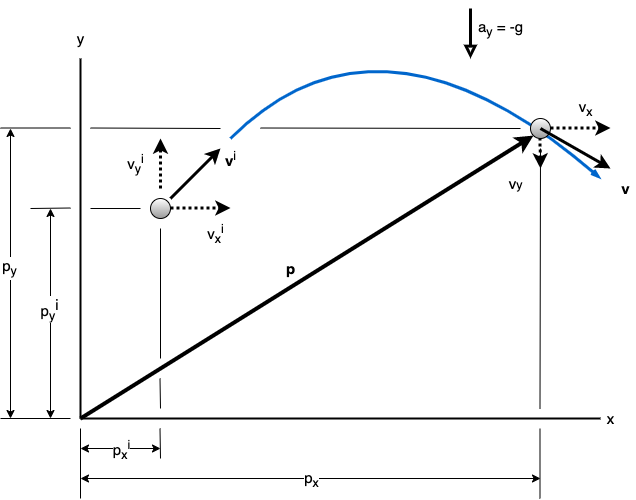

Projectile Motion Lesson
Table of Contents
We structure this lesson following Section 12.6 (Motion of a Projectile) from the classic Hibbler text "Engineering Mechanics Dynamnics, 10th edition".
1. Learning Objectives
- Derive kinematic equations for 2D projectile motion from kinematic equations from 1D rectilinear motion
- Identify the assumptions required for the projectile motion equations to hold:
- Air resistance is neglected
- Gravitational acceleration acts downward and is constant, regardless of altitude
- Solve any given (well-defined) free-flight projectile motion
problems by:
- Able to select an appropriate Cartesian coordinate system to simplify the problem as much as possible
- Able to identify the known variables
- Able to identify the unknown variables
- Able to write projectile motion equations for the given problem
- Able to solve the projectile motion equations for the unknown quantities
2. Rectilinear Kinematics: Continuous Motion (Recap)
As covered previously, the equations relating velocity (\(v\)), position (\(p\)) and time (\(t\)) for motion in one dimension with constant acceleration (\(a\)) are as follows:
\begin{equation} \label{Eq_rectVel} v = v^i + a t \end{equation} \begin{equation} \label{Eq_rectPos} p = p^i + v^i t + \frac{1}{2} a t^2 \end{equation} \begin{equation} \label{Eq_rectNoTime} v^2 = (v^i)^2 + 2 a (p - p^i) \end{equation}where \(v^i\) and \(p^i\) are the initial velocity and position, respectively.
Only two of these equations are independent, since the third equation can always be derived from the other two.
3. Motion of a Projectile
The free flight motion of a projectile is often studied in terms of its rectangular components in the \(x-y\) plane, since the projectile's acceleration always acts in the vertical direction. To illustrate the kinematic analysis, consider a projectile launched at point \((p_x^i, p_y^i)\) with the initial velocity \(\mathbf{v}^i\) having components \(v_x^i\) and \(v_y^i\), as shown in Figure 1. The position vector \(\mathbf{p}\) changes over time. At any instant of time \(t\) the position is represented by the components \(p_x\) and \(p_y\). When we assume that air resistance is neglected, the only force acting on the projectile is its weight, which causes the projectile to have a constant downward acceleration of approximately \(a = a_y = -g = -9.81 \text{m}/\text{s}^2\) or \(g = 32.2 \text{ft}/\text{s}^2\).1

Figure 1: Coordinate System and Definition of Symbols
The equations for rectilinear kinematics given above (Equations \ref{Eq_rectVel}, \ref{Eq_rectPos} and \ref{Eq_rectNoTime}) are in one dimension. These equations can be applied for both the vertical motion and the horizontal directions, as follows:
3.1. Horizontal Motion
For projectile motion the acceleration in the horizontal direction is constant and equal to zero (\(a_x = 0\)). This value can be substituted in the equations for constant acceleration given above to yield the following:
From Equation \ref{Eq_rectVel}:
\begin{equation} \label{Eq_horizVel} v_x = v_x^i \end{equation}From Equation \ref{Eq_rectPos}:
\begin{equation} \label{Eq_horizPos} p_x = p_x^i + v_x^i \end{equation}From Equation \ref{Eq_rectNoTime}:
\begin{equation} \label{Eq_horizNoTime} v_x = v_x^i \end{equation}Since the acceleration in the \(x\) direction (\(a_x\)) is zero, the horizontal component of velocity always remains constant during motion.
3.2. Vertical Motion
Since the positive \(y\) axis is directed upward, the acceleration in the vertical direction is \(a_y = -g\). This value can be substituted in the equations for constant acceleration given above to yield the following:
From Equation \ref{Eq_rectVel}:
\begin{equation} v_y = v_y^i - g t \label{Eq_vertVel} \end{equation}From Equation \ref{Eq_rectPos}
\begin{equation} p_y = p_y^i + v_y^i t - \frac{1}{2} g t^2 \label{Eq_vertPos} \end{equation}From Equation \ref{Eq_rectNoTime}:
\begin{equation} v_y^2 = (v_y^i)^2 - 2 g ( p_y - p_y^i) \label{Eq_vertNoTime} \end{equation}Recall that the last equation can be formulated on the basis of eliminating the time \(t\) between the first two equations and therefore only two of the above three equations are independent of one another.
3.3. Summary
In addition to knowing that the horizontal component of velocity is constant, problems involving the motion of a projectile can have at most three unknowns since only three independent equations can be written: that is, one equation in the horizontal direction and two in the vertical direction. Once \(v_x\) and \(v_y\) are obtained, the resultant velocity \(\mathbf{v}\), which is always tangent to the path, is defined by the vector sum as shown in Figure 1.
3.4. Procedure for Analysis
Free-flight projectile motion problems can be solved using the following procedure.
3.4.1. Step 1: Coordinate System
- Establish the fixed \(x\), \(y\) coordinate axes and sketch the trajectory of the particle. Between any two points on the path specify the given problem data and the three unknowns. In all cases the acceleration of gravity acts downward. The particle's initial and final velocities should be represented in terms of their \(x\) and \(y\) components.
- Remember that positive and negative position, velocity, and acceleration components always act in accordance with their associated coordinate directions.
- The two points that are selected should be significant points where something about the motion of the particle is known. Potential significant points include the initial point of launching the projectile and the final point where it lands. The landing point often has a known \(y\) value.
- The variables in the equation may need to be changed to match the notation of the specific problem. For instance, a distinction may need to be made between the $x$-coordinate of points \(A\) and \(B\), via notation like \(p_x^A\) and \(p_x^B\).
3.4.2. Step 2: Identify Knowns
Using the notation for the problem in question, write out the known variables and their values. The known variables will be a subset of the following: \(p^i_x, p_x, p^i_y, p_y, v^i_x, v_x, v^i_y, v_y\) and \(t\). The knowns should be written in the notation adopted for the particular problem.
3.4.3. Step 3: Identify Unknowns
Each problem will have at most 4 unknowns that need to be determined, selected from the variables listed in the Step 2 that are not known. The number of relevant unknowns will usually be less than 4, since questions will often focus on one or two unknowns. As an example, the equation that horizontal velocity is constant is so trivial that most problems will not look for this as an unknown. The unknowns should be written in the notation adopted for the particular problem.
3.4.4. Step 4: Kinematic Equations
Depending upon the known data and what is to be determined, a choice should be made as to which four of the following five equations should be applied between the two points on the path to obtain the most direct solution to the problem.
- Step 4.1: Horizontal Motion
From Equation \ref{Eq_horizVel}: \(v_x = v_x^i\) (The velocity in the horizontal or \(x\) direction is constant)
From Equation \ref{Eq_horizPos}: \(p_x = p_x^i + v_x^i t\)
- Step 4.2: Vertical Motion
In the vertical or \(y\) direction only two of the following three equations (using \(a_y = -g\)) can be used for solution. (The sign of \(g\) will change to positive if the positive \(y\) axis is downward.)
From Equation \ref{Eq_vertVel}: \(v_y = v_y^i - g t\)
From Equation \ref{Eq_vertPos}: \(p_y = p_y^i + v_y^i t - \frac{1}{2} g t^2\)
From Equation \ref{Eq_vertNoTime}: \(v_y^2 = (v_y^i)^2 - 2 g ( p_y - p_y^i)\)
For example, if the particle's final velocity \(v_y\) is not needed, then the first and third of these questions (for \(y\)) will not be useful.
3.4.5. Step 5: Solve for Unknowns
Use the equations from Step 4, together with the known values from Step 2 to find the unknown values from Step 3. We can do this systematically by going through each equation and determining how many unknowns are in that equation. Any equations with one unknown can be used to solve for that unknown directly.
4. Example (Sack Slides Off of Ramp)
A sack slides off the ramp, shown in Figure 1. We can ignore the physics of the sack sliding down the ramp and just focus on its exit velocity from the ramp. There is initially no vertical component of velocity and the horizontal velocity is:
horiz_velo = 17 #m/s
The height of the ramp from the floor is
height = 6 #m
Task: Determine the time needed for the sack to strike the floor and the range \(R\) where sacks begin to pile up.
The acceleration due to gravity \(g\) is assumed to have the following value.
g = 9.81 #m/s^2

Figure 2: Coordinate System and Definition of Symbols
4.1. Solution
Step 1: Coordinate System. The origin of the coodinates is established at the beginning of the path, point A (Figure 2). The initial positions and velocities will be taken at Point \(A\) and the final positions and velocities will be taken at Point \(B\). Points \(A\) and \(B\) were selected because we know values at the launch point (Point \(A\)) and we wish to find values related to the time of flight and the landing point (Point \(B\)).
With respect to notation, we identify point \(A\) as the initial point and point \(B\) as the final point. Therefore, in equations \ref{Eq_horizVelo}, \ref{Eq_horizPos}, \ref{Eq_vertVelo}, \ref{Eq_vertPos} and \ref{Eq_vertNoTime} we have the following new notation:
\(p^i_x = p^A_x, p_x = p^B_x, p^i_y = p^A_y, p_y = p^B_y, v^i_x = v^A_x, v_x = v^B_x, v^i_y = v^A_y, v_y = v^B_y\)
and \(t_{AB}\) refers to the time that passes when the particle moves from Point \(A\) to Point \(B\).
Step 2: Identify Knowns. We know values for 5 of the 9 possible variables:
- \(p_x^A = 0\)
- \(p_y^A = 0\)
- \(v_x^A = \text{horiz_velo}\)
- \(v_y^A = 0\)
- \(p_y^B = -\text{height}\) (negative because below the origin)$
pAx = 0 pAy = 0 vAx = horiz_velo vAy = 0 pBy = -height
Step 3: Identify Unknowns. According to the original question our goal is to find 2 unknowns:
- \(t_{AB}\): the time needed for the sack to strike the floor.
- \(p_x^B\): the range \(R\), which is the x-coordinate of the final position.
(We also have 2 other unknowns that are not specifically asked for: \(v_x^B\) and \(v_y^B\). We may need to solve for these as part of the solution for the requested unknown values.)
Step 4: Kinematic Equations.
Step 4.1: Horizonal Motion. From \ref{Eq_horizVel} we know:
\begin{equation} \label{Eq_1} v_x^B = v_x^A \end{equation}From \ref{Eq_horizPos} we know:
\begin{equation} \label{Eq_2} p_x^B = p_x^A + v_x^A t_{AB} \end{equation}Step 4.2: Vertical Motion. From \ref{Eq_vertVel} we know:
\begin{equation} \label{Eq_3} v_y^B = v_y^A - g t_{AB} \end{equation}From \ref{Eq_vertPos} we know:
\begin{equation} \label{Eq_4} p_y^B = p_y^A + v_y^A t_{AB} - \frac{1}{2} g t_{AB}^2 \end{equation}From \ref{Eq_vertNoTime} we know:
\begin{equation} \label{Eq_5} (v_y^B)^2 = (v_y^A)^2 - 2 g ( p_y^B - p_y^A) \end{equation}Step 5: Solve for the Unknowns. We can go through each of the above 5 equations to see how many unknowns are in each equation:
- Eq1 has one unknown: \(v_x^B\)
- Eq2 has two unknowns: \(p_x^B\), \(t_{AB}\)
- Eq3 has two unknowns: \(v_y^B\), \(t_{AB}\)
- Eq4 has one unknown: \(t_{AB}\)
- Eq5 has one unknown: \(v_y^B\)
From Step 3, we know that our goal is to find \(t_{AB}\) and \(p_x^B\). We can see that \ref{Eq_4} allows us solve for \(t_{AB}\). Once we have this value, we can use \ref{Eq_2} to solve for \(p_x^B\). (Although we could also solve for \(v_x^B\) and \(v_y^B\), using \ref{Eq_1} and \ref{Eq_3} (or \ref{Eq_5}), respectively, we are not asked to do so by the question.)
Find \(t_{AB}\) from \ref{Eq_4}:
\(p^B_y = p^A_y + v^A_y t - \frac{1}{2} g t_{AB}^2\)
Since \(v^A_y = 0\),
\(p^B_y = p^A_y - \frac{1}{2} g t_{AB}^2\)
We can rearrange the above equation to solve for \(t_{AB}\):
\(t_{AB} = \sqrt{(p^A_y - p^B_y)/\frac{1}{2}(g)}\)
The following code solves for \(t_{AB}\).
import math
tAB = math.sqrt((pAy - pBy)/(0.5*(g)))
print("ANSWER tAB = ", tAB, "s")
Find \(p_x^B\) (\(R\)) from \ref{Eq_2}:
\(R = p^B_x = p^A_x + v^A_x t_{AB}\)
We know \(p^A_x = 0\). Therefore,
\(R = p^B_x = p^A_x + v^A_x t_{AB}\)
pBx = pAx + vAx*tAB
print("ANSWER R =", pBx, "m")
Kinematic Quantity Symbols Used For Modelling Projectile Motion and Sack Example
| Position | Velocity | Acceleration |
| --- | --- | --- |
| p (pos in 1D) | v (velo in 1D) | a (accel in 1D) |
| \(\mathbf{p}\) (pos vector) | \(\mathbf{v}\) (velo vector) | \(\mathbf{a}\) (accel vector) |
| \(\mathbf{p}^i\) (init pos vector (not used)) | \(\mathbf{v}^i\) (init velo vector) | NA |
| \(p_x\) (pos x comp) | \(v_x\) (velo x comp) | \(a_x\) (accel x comp) |
| \(p_y\) (pos y comp) | \(v_y\) (velo y comp) | \(a_y\) (accel y comp) |
| \(p_x^i\) (init pos x comp) | \(v_x^i\) (init velo x comp) | NA |
| \(p_y^i\) (init pos y comp) | \(v_y^i\) (init velo y comp) | NA |
| \(p_x^A\) (Point A pos x comp) | \(v_x^A\) (Point A velo x comp) | NA |
| \(p_y^A\) (Point A pos y comp) | \(v_y^A\) (Point A velo y comp) | NA |
| \(p_x^B\) (Point B pos x comp) | \(v_x^B\) (Point B velo x comp) | NA |
| \(p_y^B\) (Point B pos y comp) | \(v_y^B\) (Point B velo y comp) | NA |
Other Symbols Used For Modelling Projectile Motion and Sack Example
| Symbol |
| --- |
| t (time) |
| x (x-axis in Cartesian plane) |
| y (y-axis in Cartesian plane) |
| g (acceleration due to gravity) |
Symbols Used Only For Sack Example
| Symbol |
| --- |
| horizvelo (horizontal velocity of sack when launched (at A)) |
| height (height of the sack when launched (distance between A and C) |
| R (Vertical distance covered by sack at instant when it lands at B) |
| A (Location where sack is launched) |
| B (Location where sack lands) |
| C (Location of ground directly below where sack is launched) |
| \(t_{AB}\) (time elapsed from launch at A to landing at B) |
Traceability Between Symbols in the Model and Code for Sack Example
The symbols are presented in the order that they are used in the code.
| Code Symbol | Model Symbol |
| ------------ | ----------- |
| horizvelo | horizvelo |
| height | height |
| vAx | \(v^A_x\) |
| g | \(g\) |
| pBy | \(p^B_y\) |
| pAy | \(p^A_y\) |
| tAB | \(t_{AB}\) |
| pAx | \(p^A_x\) |
| pBx | \(p^B_x\) |
Footnotes:
: This assumes that the earth's gravitational field does not vary with altitude